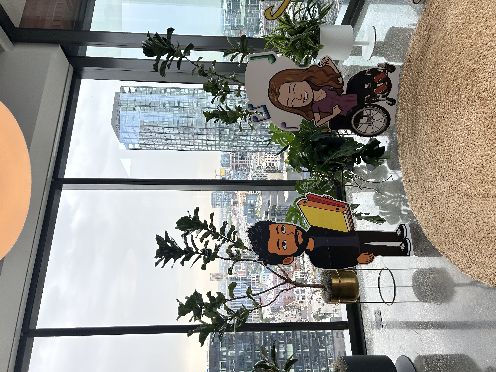
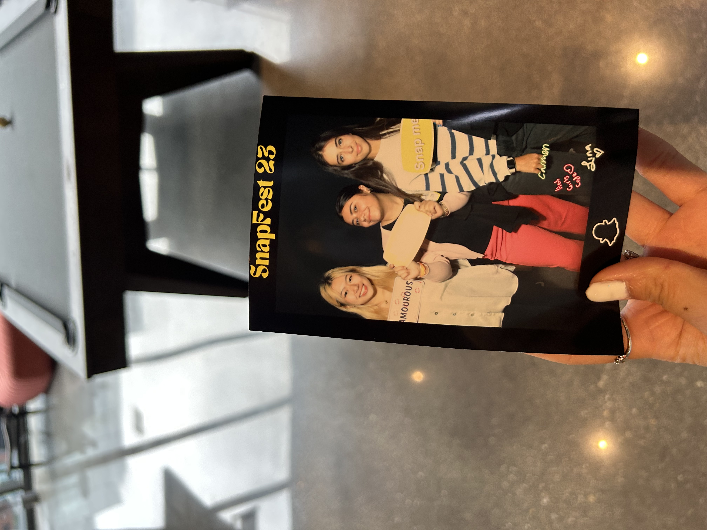
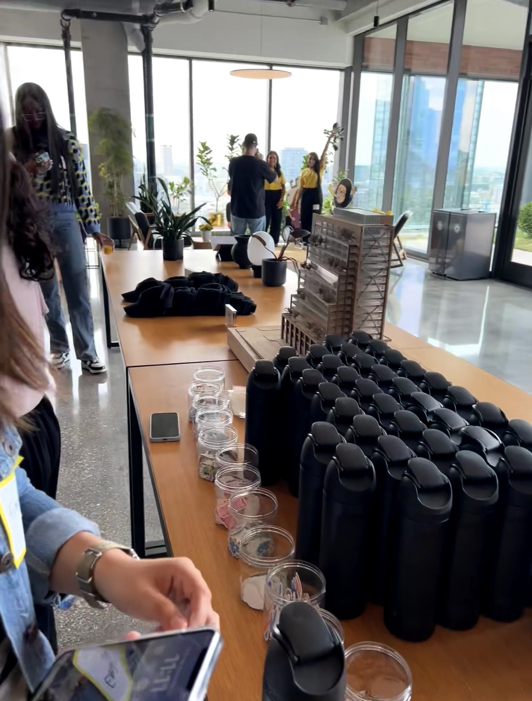
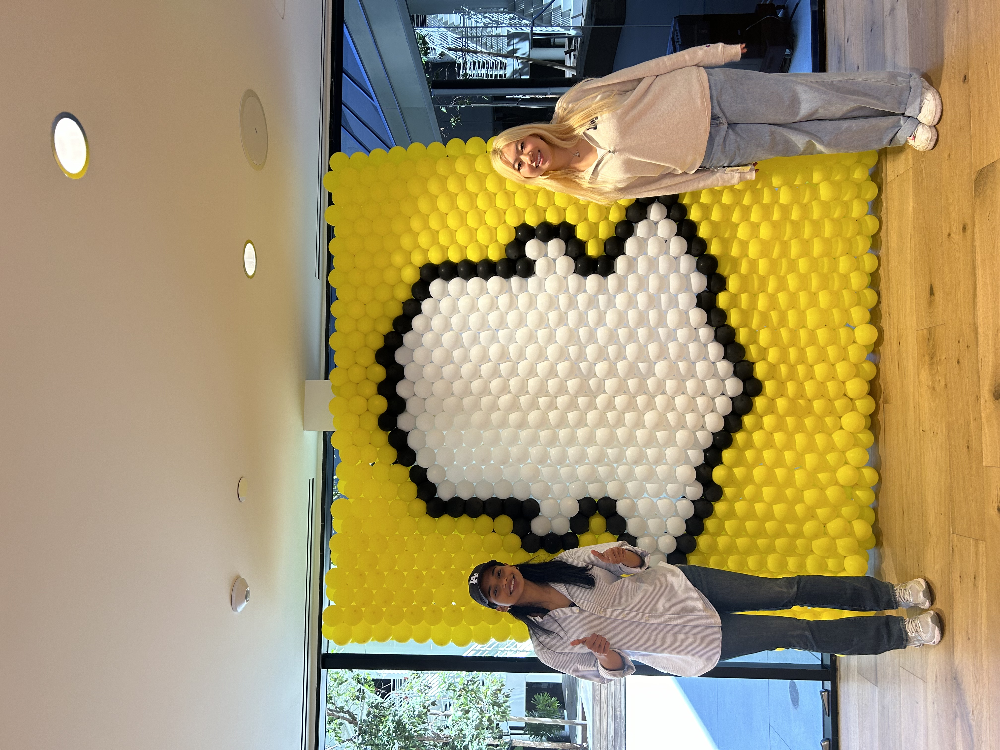
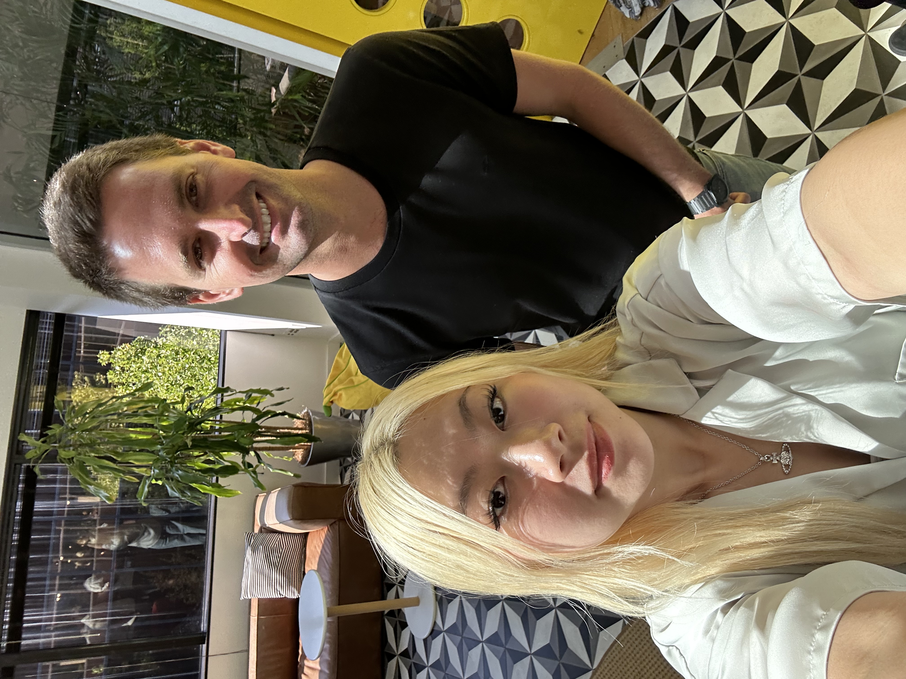

Position: Software Engineer Intern
I wanted to share my process of getting into Snapchat, it was a pretty unique one I would say. I was a junior in undergrad when I got an email from a recruiter from Snap inviting me to attend their recruiting event Snapfest in Chicago. At first, I thought it was a phishing email because they had very playful and colorful style of email, unlike what I was used to. I also tried to look Snapfest up and found no information on the internet at the time. However, the recruiter’s public profile seems legitimate and the form sent to me mentioned that they would reimburse my travel to Chicago and so I thought it wouldn’t hurt.
The day of the event, all the students there were also juniors but from various colleges around Chicago. The venue was a high floor of some skyscraper, very decorated with close-to-life size bitmojis, and snapchat themed colors all around. They had panelists of past interns presenting as well as lots of various catered food in the center of the room. They explained the process of how the interviews will go, although giving pretty generic information such as how it’s two rounds and they will ask data structures and algorithm questions. Everyone who was invited to this event also gets an interview that they will schedule you with within the next 2 months.



Honestly, Snapfest blew my mind. They had yellow flowers in pots for all attendees to take home, multiple black owala water bottles, Snapchat logo hats, Snapchat stickers, the softest Snapfest t-shirts, and snapchat colored bags to carry all the goodies home. They also had a magic mirror that looks like an ordinary mirror but you can actually press a button that takes a photo and prints it out like a photo strip. It was an amazing event that I would recommend to anyone if they get invited!
I am honestly not sure how my email were on their mailing list because none of my friends that I knew were invited, but I feel very grateful to have had this opportunity, interviewed, and eventually accepted their internship offer. This made me realize that there are probably so many opportunities like this out there, but you’ll probably never know about it unless you or someone you know happens to get one.


Photos with my intern friends and the ceo, Evan Spiegel